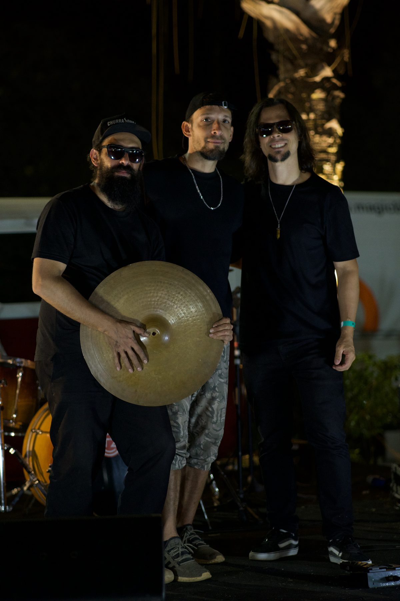

Rafael Z
Trio
A banda ao vivo: canções autorais, reggae, rock e ska, num show feito para cantar junto.The live band: original songs, reggae, rock and ska, in a show made for singing along.
← Voltar ao siteBack to the siteGroove, mensagem
e energia boa.Groove, message
and good energy.
O Rafael Z Trio é a banda de Rafael Z: voz e violão, baixo e bateria. As canções autorais dividem o palco com clássicos do reggae e do rock, nacionais e internacionais, de Charlie Brown Jr. e O Rappa a Sublime e Red Hot Chili Peppers.Rafael Z Trio is Rafael Z's band: voice and guitar, bass and drums. The original songs share the stage with Brazilian and international reggae and rock classics, from Charlie Brown Jr. and O Rappa to Sublime and Red Hot Chili Peppers.
Com som próprio, o trio leva o show completo a festivais, bares, eventos corporativos e festas.With its own sound system, the trio brings the complete show to festivals, venues, corporate events and parties.
Ao vivo,
ao ar livre.Live,
in the open air.
O Rafael Z Trio foi a atração do Pôr do Som da Brasal Veículos, evento ao ar livre na Praça do Cruzeiro, em Brasília. A apresentação foi muito bem recebida pelo público e ficou registrada em vídeo.Rafael Z Trio performed at Brasal Veículos' Pôr do Som, an open-air event at Praça do Cruzeiro in Brasília. The show was warmly received by the audience and was filmed.
Duas apresentações na programação do festival, em julho de 2024. Os filmes do show de 22 de julho estão no portfólio ao vivo.Two slots in the festival programme, July 2024. The films of the 22 July show are in the live portfolio.

Rafael Z Trio no Capital Moto Week 2024Rafael Z Trio at Capital Moto Week 2024" loading="lazy" style="object-position:50% 35%">


Vamos levar
essa energia
ao seu palco.Let's bring
this energy
to your stage.
Festivais, eventos corporativos, bares, restaurantes e festas privadas.Festivals, corporate events, venues, restaurants and private parties.
- +55 61 98416-7777
- rafaelmartinszeredo@gmail.com
- BaseBased in
- Brasília, DF
- IdiomasLanguages
- Português · English